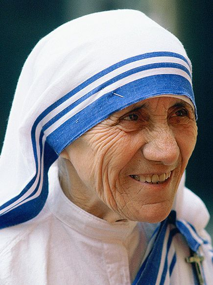

MOTHER TERESA
(1910-1997)
Mother Teresa - The Smile Of Calcutta
26 August 1910 - 5 September 1997 Mother Teresa, born as Anjezë Gonxhe Bojaxhiu on August 26, 1910, in Skopje, North Macedonia, was a Catholic nun and missionary who dedicated her life to serving the poor and destitute. She founded the Missionaries of Charity in 1950, a religious congregation that provided assistance to the most marginalized members of society, including the sick, orphaned, and dying. The organization grew over the years and extended its reach to over 130 countries. Mother Teresa's unwavering commitment to serving others earned her international recognition and numerous awards, including the Nobel Peace Prize in 1979. She was acknowledged for her selfless efforts to alleviate poverty and suffering, irrespective of religious or cultural differences. Known for her humility and simplicity, Mother Teresa lived a life of poverty herself, often wearing a plain white sari with a blue border, similar to what the poorest women in India wore. She embraced a life of austerity to identify with the people she served and to better understand their struggles. Mother Teresa's legacy extends far beyond her lifetime. Her humanitarian work continues through the Missionaries of Charity, which operates orphanages, hospices, and charitable centers worldwide. She remains an inspiring figure for individuals and organizations engaged in charitable and humanitarian endeavors.
Awards
- NOBEL PEACE PRIZE : Mother Teresa was awarded the Nobel Peace Prize in 1979 for her humanitarian work and efforts to alleviate the suffering of the poor and destitute.
- BHARAT RATNA : In 1980, Mother Teresa received the Bharat Ratna, India's highest civilian award. This prestigious honor was bestowed upon her in recognition of her outstanding contributions to humanity.
- POPE JOHN XXIII PEACE PRIZE : In 1971, Mother Teresa was awarded the Pope John XXIII Peace Prize by the Pio Manzù Centre in Italy. The prize acknowledged her extraordinary efforts in promoting peace and harmony through her work with the Missionaries of Charity, her compassion towards the suffering, and her dedication to the service of the poor.
- ORDER OF THE SMILE : Mother Teresa received the Order of the Smile in 1993, which is an international award given to individuals or organizations that work for the well-being and happiness of children.
- PRESIDENTIAL MEDAL OF FREEDOM : In 1985, Mother Teresa was presented with the Presidential Medal of Freedom, the highest civilian award in the United States. This prestigious honor was given to her by President Ronald Reagan in recognition of her exceptional contributions to humanity, her compassion for the less fortunate, and her unwavering dedication to the principles of peace and justice.